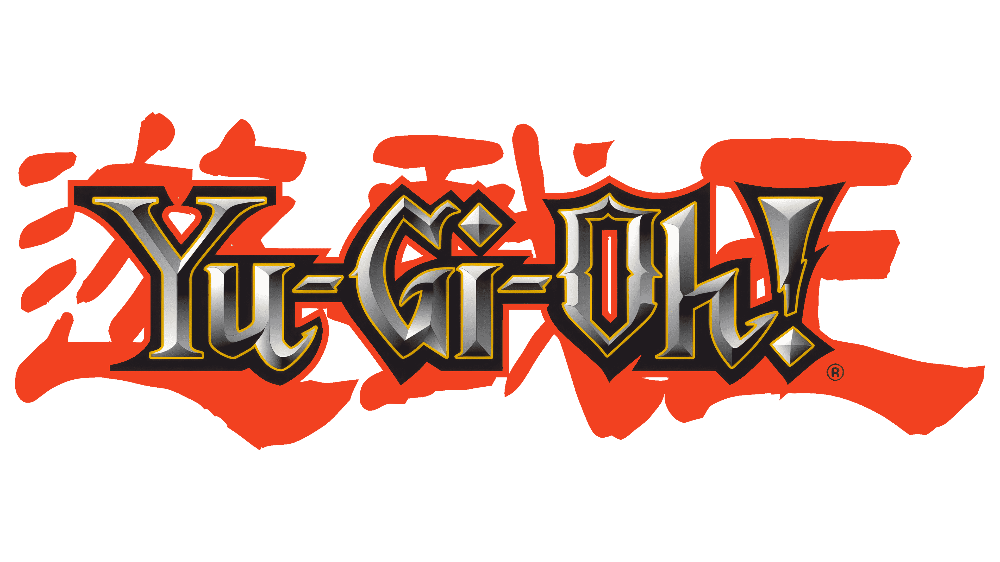
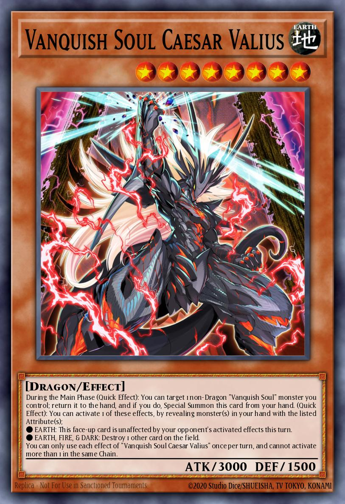
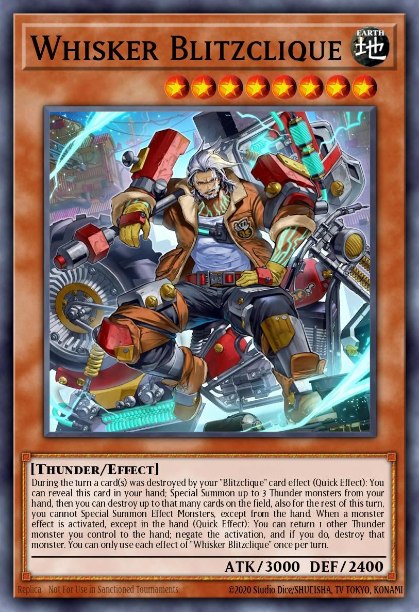
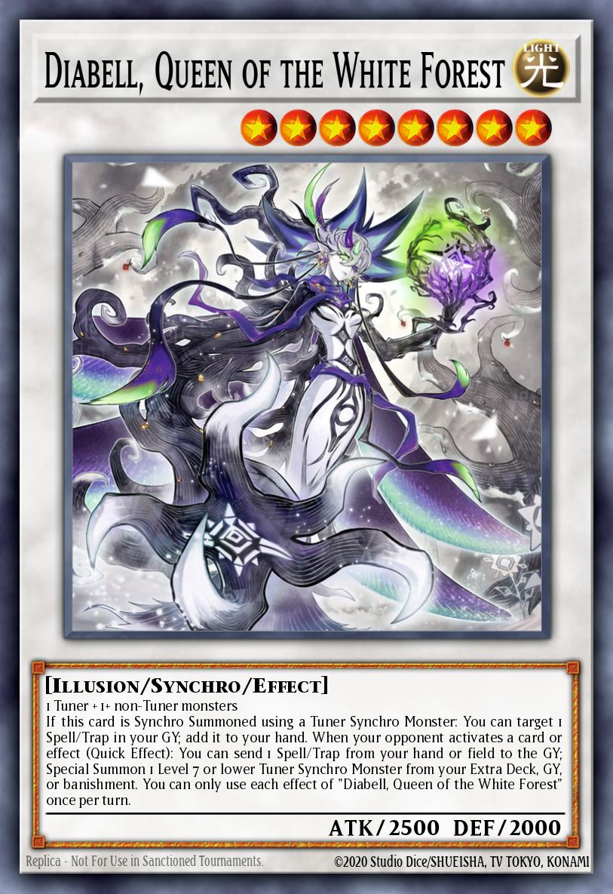

My name is Muhammad Musa, and I am a passionate fan of the Yu-Gi-Oh! trading card game. I have been playing Yu-Gi-Oh! for several years and have developed a deep understanding of the game's mechanics, strategies, and lore. My love for the game has led me to participate in local tournaments and engage with the Yu-Gi-Oh! community online.
In addition to playing the game, I enjoy collecting rare and valuable cards, as well as building competitive decks. Some of my personal favorite decks to play include: Vanquish Soul, Blitzclique, and White Forest. I am always looking for new ways to improve my skills and stay up-to-date with the latest card releases and meta trends.



Through this website, I aim to share my knowledge and experiences with fellow Yu-Gi-Oh! enthusiasts, providing insights into the game's history, recent developments, and strategic approaches. I hope to connect with other players who share my passion for the game and foster a community where we can learn from each other and grow as duelists.